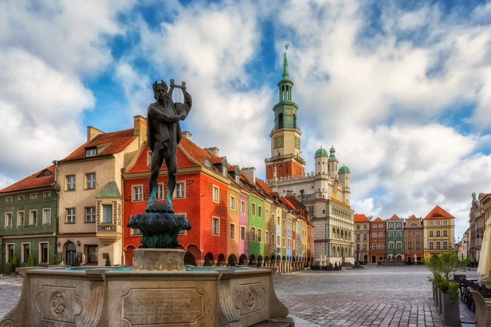

A route through places connected with the beginnings of the Polish state — Gniezno, Poznań, Kruszwica, Ostrów Lednicki. Polish history from its sources. Slow travel along the Piast Trail.
Why the Piast Trail, differently
The Piast Trail is a route through places where the Polish state was born. Gniezno, Poznań, Kruszwica, Ostrów Lednicki — all places connected with the Piast dynasty, the first dynasty to rule in Poland. The route lets you understand how Polish statehood was shaped in the 10th and 11th centuries. It is a journey not only through places but also through time — to the beginnings of Poland.
Slow travel along the Piast Trail is a celebration of history. Instead of rushing from monument to monument, stop in each place longer — tour with a guide, understand the historical context, read about the events that took place here. Each place has its own history, its own secrets, its own dramas. Ask, learn, try to understand. This is a journey that rewards those who slow down — the longer you are in one place, the more you can truly understand about the beginnings of Poland.
What to see
The Piast Trail splits into several sections: Greater Poland (Gniezno, Poznań, Ostrów Lednicki), Kuyavia (Kruszwica, Inowrocław, Strzelno), Pałuki (Żnin, Biskupin). Riding the whole route takes 3–5 days.
Gniezno — the first capital of Poland
- Gniezno Cathedral — a Gothic temple from the 14th century, with the relics of St. Adalbert. Place of coronation of the first Polish kings. Worth it for history and architecture.
- Gniezno Doors — bronze doors from the 12th century, with 18 scenes from the life of St. Adalbert. One of the most valuable works of Romanesque art in Europe. Worth it for art.
- Lech Hill — the hill on which the cathedral stands, with a panorama of the town. Worth it for views.
- Museum of the Gniezno Archdiocese — an exhibition about the history of the cathedral and archdiocese. Worth it for context.
- Market square in Gniezno — a medieval market square with townhouses and a town hall. Worth a walk.
Poznań and Ostrów Lednicki
- Ostrów Tumski in Poznań — the oldest part of the city, with a cathedral where the baptism of Poland probably took place in 966. Worth it for history.
- Poznań Cathedral — a Gothic temple from the 10th century, one of the oldest in Poland. Worth it for architecture.
- Brama Poznania — a modern heritage interpretation centre on Ostrów Tumski. Worth it for context.
- Ostrów Lednicki — an island on Lake Lednica, with the remains of one of the most important Piast strongholds. Worth it for history.
- Museum of the First Piasts — an exhibition about the history of Ostrów Lednicki and the beginnings of Poland. Worth it for context.
Kruszwica, Strzelno, Biskupin
- Kruszwica — a legendary place, connected with the legend of Popiel and the mice. The Mouse Tower over Lake Gopło is one of the most recognizable points on the trail. Worth it for history and views.
- Strzelno — a small town with the Romanesque Church of St. Procopius and the Rotunda of St. Procopius, one of the most valuable Romanesque monuments in Poland. Worth it for architecture.
- Biskupin — an archaeological reserve with a reconstruction of a Lusatian culture settlement from the Bronze Age. Worth it for history and archaeology.
- Żnin — a small town with a market square and accommodation base. Worth a walk.
- Inowrocław — a spa town with a health park. Worth it for relaxation.
When to go
- April–June — the best time for slow travel. Fewer tourists, long days, stable weather. Worth a walk around the towns.
- July–September — peak season. Sites crowded, but all attractions open. Worth it for cultural events.
- September–October — second best. Autumn colours, fewer people. Worth a walk around the strongholds.
- November–March — sites in winter are less crowded, but some may be closed. Check opening hours before your trip.
Getting there
The Piast Trail runs through Greater Poland and Kuyavia — you can start anywhere. Best to travel by car or train, connecting several towns in one trip.
- By train: Gniezno, Poznań, Inowrocław, Kruszwica (station nearby) have railway stations, with connections from most Polish cities.
- By car: the trail runs through main national roads (S5, DK5). Plan the route to connect several towns.
- By bus: PKS and private operators serve most towns on the route.
How much time you need
A weekend (2 days) is the minimum — Gniezno (cathedral, Gniezno Doors) and Poznań (Ostrów Tumski, Brama Poznania).
Three days is realistic for a first visit. Gniezno, Poznań, Ostrów Lednicki, Kruszwica.
A week lets you explore the whole trail — Greater Poland, Kuyavia, Pałuki. Add Biskupin, Strzelno, Żnin.
What to eat and where to sleep
- Greater Poland cuisine — pyry z gzikiem, St. Martin's croissants, goose for St. Martin's Day. Worth trying in local inns.
- Kuyavian cuisine — Toruń gingerbread, Kuyavian żur, duck with apples. Worth trying in local restaurants.
- Pyry z gzikiem — potatoes in their jackets with curd cheese, onion and sour cream. A Greater Poland classic.
- Beer from local breweries — several craft breweries in the region.
- Coffee and cake — Poznań and Gniezno have several good cafés.
- Local products — cheeses, honey, cold cuts, available in regional shops.
Accommodation: Poznań (largest choice, more options), Gniezno (smaller choice, close to the cathedral), Inowrocław (spa, quiet), Biskupin (agritourism farms nearby), Żnin (small town, smaller choice). Book accommodation in advance, especially in summer season.
Practical tips
- Guided tours — the trail's history is complex, and without context many places look similar. Worth going with a guide.
- Gniezno Doors — in Gniezno Cathedral. Worth seeing the original, though a copy is also displayed outside.
- Biskupin — the archaeological reserve is open seasonally (April–October). Check opening hours before your trip.
- Ostrów Lednicki — the island is accessible by ferry from the shore of Lake Lednica. Check the ferry schedule.
- Weather — Polish weather can be changeable. Even in July, bring a rain jacket.
- Transport — Polish trains have bike carriages. Use them if you want to transport bikes between stages.
- Signal — good in towns, weaker in villages. Have an offline map.